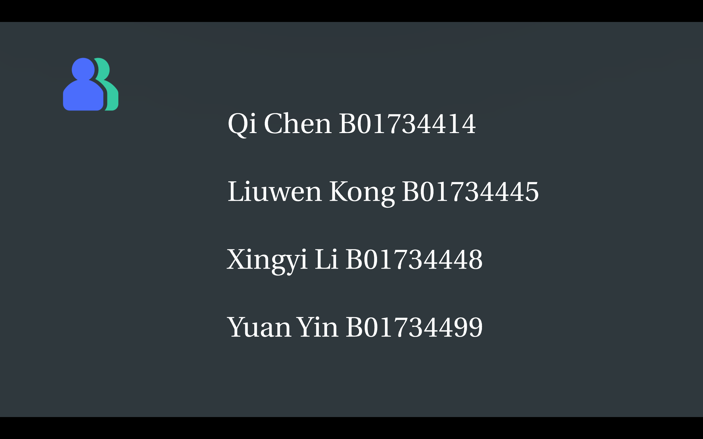
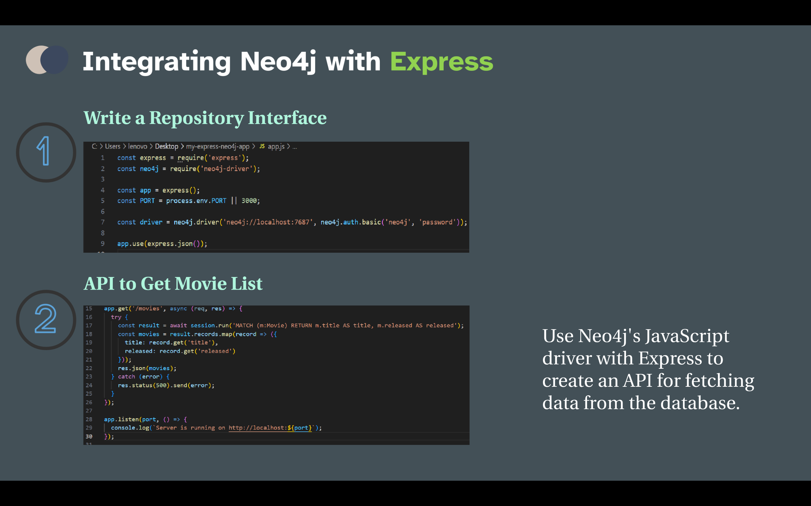

Presentation
🎥 Click here to view our interactive presentation on Prezi!
Hello everyone, welcome to our presentation! Today, we will explore a technology that plays a significant role in modern data management: graph databases, with Neo4j as a leading example.

Here are our team members.
Look at the content, we will look at Neo4j's key features, its application cases, and its powerful capabilities in data management and analysis. By understanding how Neo4j operates and its technical advantages, we believe you'll gain a clearer understanding of how it transforms traditional data processing methods and enables businesses to unlock greater value.
Please refer to the handouts. We've provided links to the official Neo4j documentation, which is ideal for beginners and helps you get it quicker .
First, What is Neo4j?
It was created in 2007 by Emil Eifrem and is written in Java.
Let's look at the overview.
Neo4j is a graph database management system designed for connected data. It uses a graph structure to store data, making it more efficient than traditional relational databases in processing complex relationships and queries.
It's structured around three basic elements: nodes, relationships, and properties.
Neo4j uses an intuitive query language called Cypher, employs ACID-compliant transaction management for durability and consistency, and is highly efficient for handling complex data structures, delivering outstanding performance.
In the next part, we'll discuss the simple illustrations of Neo4j.
To start using Neo4j, first, open your terminal and navigate to the installation folder where Neo4j is located. This is typically done using the cd command followed by the path to the installation directory. Once you're in the correct folder, run the command neo4j start to launch the database. You should see messages indicating that the database is starting up successfully.
After that, open your web browser and go to http://localhost:7474. This will take you to the Neo4j Browser interface, where you can interact with your database. You'll log in using the default username and password, both set to neo4j. Upon your first login, you'll be prompted to change the password for security purposes. Once logged in, you can start creating nodes and relationships using Cypher queries, exploring the powerful features of this graph database.

The image shows a Neo4j query where three nodes are being created, each representing a student with properties for their name, age, and gender. The code looks like this:
In this query, we use the CREATE statement to instantiate three Student nodes in Neo4j. Each node has properties such as name, age, and gender.
-
First Node: Represents a student named Brandy, who is 21 years old and identifies as female.
-
Second Node: Represents Catherine, a 19-year-old female student.
-
Third Node: Represents David, who is also 21 years old and identifies as male.
Below is the Neo4j query used to create these nodes:
This structure allows us to efficiently store and retrieve information about students in a graph database, making it easy to analyze relationships and attributes within our dataset.
The output shows that the query ran successfully. Each CREATE statement added a node with the specified properties to the database.
The result shows that each node is labeled 'student' and includes the attributes: name, age, and gender.
Creating Relationships
In this query, the MATCH clause is used to find the existing nodes in the database that match the label "Student" based on their name properties. Once the nodes are identified, the CREATE clause establishes relationships between them.
The relationships created are labeled [:FRIENDS_WITH], representing the friendships among the students. This allows for a clear representation of their social connections within the graph, facilitating queries that can explore their relationships and interactions more effectively. By modeling friendships in this way, you can analyze social dynamics and other patterns within the dataset.
This query retrieves the FRIENDS_WITH relationships between nodes labeled as "Student." It returns the names of each student along with the names of their friends.
The results are displayed in a clear format, allowing you to easily see the connections among the students.
By executing this query, you can effectively visualize the social network among the students, highlighting their friendships and providing insights into their relationships within the graph database. This can be particularly useful for analyzing social dynamics and understanding how individuals are connected.
Part Three: How to Integrate Neoj4 Technology with Other Components
This section outlines methods for efficiently managing graph data using Neo4j and integrating it with modern tools to enhance system functionality and performance.
In the front end, using GraphQL with Neo4j and React provides flexible querying capabilities, allowing applications to respond efficiently to user needs and improve user experience. For example, users can input their names to dynamically view their social network, including friends and friends of friends. CSS can enhance the interface for a more visually pleasing experience.
In the back end, Neo4j works well with frameworks like Spring and Express, simplifying data extraction and improving development efficiency. Neo4j's Aura cloud service further eases deployment by managing infrastructure, enabling developers to focus on application logic.
For a complete solution, Docker containers can package and deploy Neo4j, the Express backend, and front-end pages, making the system both functional and maintainable.
Neo4j also integrates with machine learning tools, allowing data to be extracted for training models and predictions to be stored back in the database, enhancing recommendation accuracy.
Finally, Neo4j supports social networking applications by storing user relationships, posts, and comments, highlighting its strengths in managing complex relational data.
The integration of Spring Boot with Neo4j.
To begin, an entity class should be created using Spring Data Neo4j annotations to map nodes and relationships within the database, establishing a basic database model. Subsequently, relationship entity classes are created to represent associations between nodes. A Repository interface is then written to define methods for interacting with Neo4j, simplifying the execution of queries and database operations.
Finally, the Repository interface is injected into the service or controller layer to perform database operations, ensuring seamless integration with Neo4j.

The integration of Neo4j with the Express framework.
To begin, a Repository interface is created as a bridge to interact with the Neo4j database, utilizing the official JavaScript driver to simplify querying and data updates. Next, the Express framework is used to create an API that retrieves movie lists and pulls data from the Neo4j database through this API.
This setup enables the front end to easily request back-end data, dynamically displaying movie information and enhancing the user experience.
In summary, combining Neo4's JavaScript driver with Express allows for efficient API development, streamlining the development process and enhancing system performance and flexibility.
Ok, let's look at part four: Application Scenarios.
This slide presents the Application Scenarios of Neo4j. The four key sectors where this technology is applied are: Network and IT Operations, Government, Fraud Detection & Analytics, Telecommunications.
1. Network and IT Operations:
Graph databases excel in managing and analyzing complex IT infrastructures and networks, making them ideal for tasks such as network topology mapping, fault detection, and operational monitoring.
2. Government:
Government entities can use graph databases for managing relationships within public administration, ensuring efficient data handling, and improving decision-making processes.
3. Fraud Detection & Analytics:
In a financial trading system, each transaction can be represented by a relationship, with the trading parties as nodes. Neo4j can quickly analyze the trading relationships between nodes, helping to identify abnormal transaction patterns or potential fraudulent activities. By tracking transaction paths, it can effectively detect money laundering activities or fake transactions.
4. Telecommunications:
Telecommunications companies benefit from graph databases by optimizing network operations, managing customer relationships, and detecting network issues, ensuring seamless communication and connectivity.
Next, I'm going to talk about social network in detail.
How to analyze relationships between users, identify influencers, and discover potential social groups on social platforms? Firstly, I should start by creating a circle of friends.
Show feng's circle of friends. Indicates that the query starts from the node "Feng" and passes through all nodes of up to 6 layers of relationships. If you want to query a node with a different name, change "Feng" to the corresponding name. Neo4j is great for processing and analyzing relational data in social networks. Each user can act as a node, and the friendship between users can be represented by relationships. With graph traversal, Neo4j is able to quickly find a user's social circle and identify users with broad influence.
There are a few concepts to introduce here. <1> Degree relationship (direct relationship) and <2> Relationship of the second degree. The statement on the left returns all nodes that are directly connected to Xun. The statement on the right shows Xun and those nodes connected through layers 1 to 2 and may show more complex connection patterns.
This section has been upgraded from the previous example, and of course, more upgrades can be made in the future. For instance, we could add more friend queries, like third or fourth-degree connections. It could also show how to recommend jobs through friend relationships.
Now, let's discuss the pros and cons of Neo4j in real-world applications.
Let's look at the advantages of Neo4j first.
Efficient handling of complex relationships: Neo4j is ideal for analyzing network or graph data with intricate relationships.
Intuitive query language (Cypher): Cypher simplifies and makes querying data more intuitive.
ACID Transaction Support: Neo4j adheres to ACID principles, ensuring data reliability and consistency.
Extensive Integration and Support: It offers extensive integration features for interoperability with other systems.
Scalability: Neo4j can scale with data growth, making it suitable for large-scale applications.
Flexibility: Neo4j adapts to various data structures and requirements.
Real-time data analysis: It supports real-time data querying and analysis, which is useful for time-sensitive applications.
Intuitive data visualization: Neo4j's visualization capabilities make data relationships clear and understandable.
Here are some disadvantages.
Although Cypher is relatively simple, transitioning from traditional relational databases requires an adjustment period.
Neo4j demands higher hardware specs and can be complex to maintain.
Write-heavy operations may perform better on other databases.
The community edition lacks advanced features, limiting its use in complex projects.
For some use cases, especially for small projects and individual users, there can be cost pressures.
Let's look at a quick comparison.
Queries to Dgraph took the same amount of time, as expected in the both cases.
Neo4j's performance benefits from query caching, but without caching enableda, Dgraph's performance is superior.
To conclude, we've examined various aspects of the Neo4j graph database, from its technical overview to practical applications.
Neo4j, with its unique structure of nodes, relationships, and properties, enables efficient data association and querying, making it especially suitable for managing and analyzing complex relationships.
Development and Future
Neo4j shows the powerful potential of graph databases for managing complex relational data.
It is poised to continue leading innovation in this field, offering efficient data management and analysis solutions for a wider range of industries and applications.
We have also provided some helpful guides and courses for further exploration.
This is a video called Neo4j in 100 Seconds.
There's also an online course available if you want to learn more about Neo4j. Both are great options.
Thank you for listening, and we hope this presentation has clarified how Neo4j is redefining data analysis. Are there any questions?
Q & A
How does Neo4j differ from traditional relational databases?
A: Unlike relational databases, which use tables and columns, Neo4j uses nodes, relationships, and properties to represent data in a graph format. This structure enables Neo4j to execute complex queries involving multiple data relationships more efficiently, especially for large datasets with intricate connections.
What are some practical challenges you faced while implementing Neo4j, and how did you overcome them?
Challenges in Data Modeling
- Challenge: Graph databases differ from traditional relational databases, requiring adaptation in representing relationships and node classification, especially when relationships are complex.
- Solution: Adopt an iterative design approach, starting with a simple model and gradually increasing complexity based on requirements.
The Development Prospects of Neo4j?
As I mentioned at the beginning of the presentation: Neo4j plays an important role in modern data management and is a leading example.
So I think as data relationships become increasingly complex, Neo4j's application prospects are broadening across various fields. Whether in building next-generation social networks, optimizing supply chain management, or advancing AI and machine learning, Neo4j is set to play a vital role.